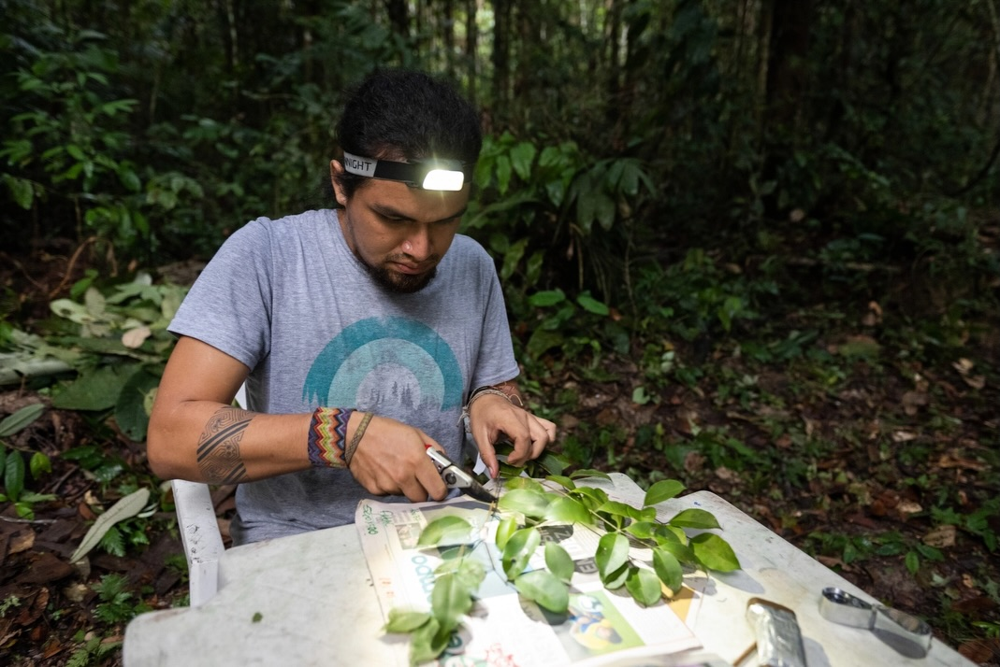
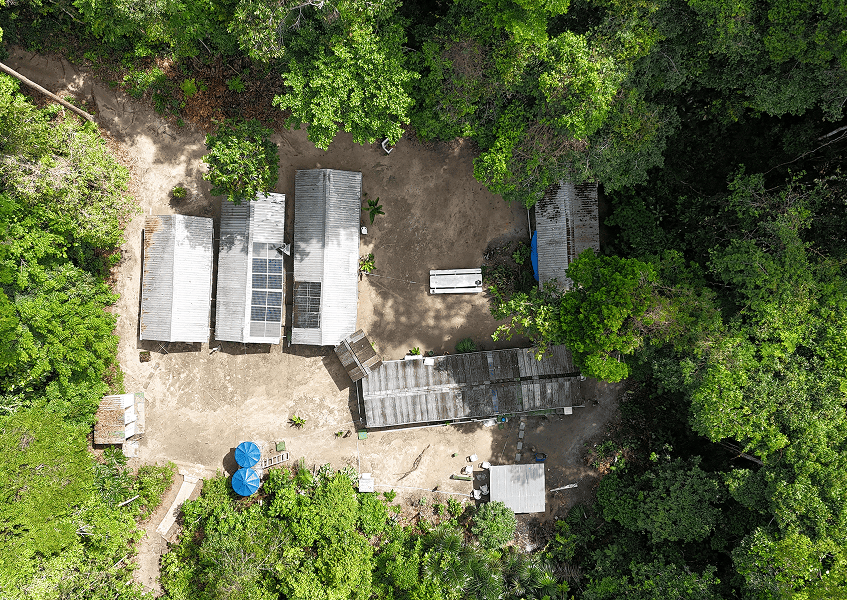
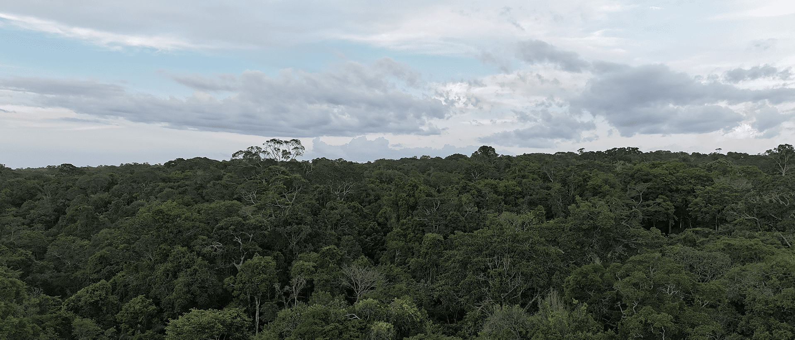
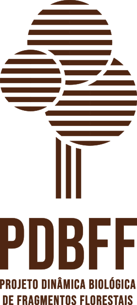
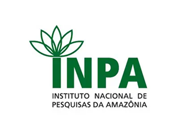
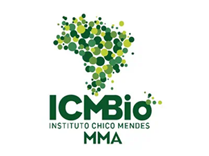
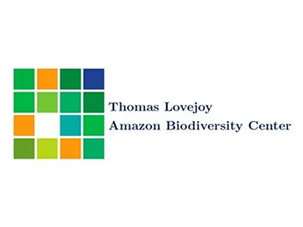
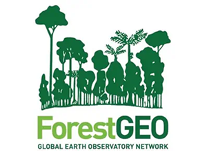

47
Anos de pesquisa contínua
Anos de pesquisa contínua
Publicações
Alunos formados
Hectares monitorados
O PDBFF tem o compromisso de contribuir com a conservação da Amazônia a partir do desenvolvimento da ciência na região.
Nosso objetivo é compreender a dinâmica das florestas fragmentadas e o impacto das atividades humanas em sua biodiversidade.



O PDBFF depende do apoio de pessoas como você para manter bases de campo, financiar pesquisas, fornecer bolsas a jovens cientistas e garantir que essa floresta continue sendo estudada, compreendida e preservada.
DOE AGORA
A Amazônia em tempo real


Por trás de cada descoberta, existem pessoas. Esta série revela quem está no campo, no laboratório e nos bastidores, transformando ciência em conhecimento e conservação em ação.
Instituições que tornam possível a pesquisa contínua na Amazônia.



